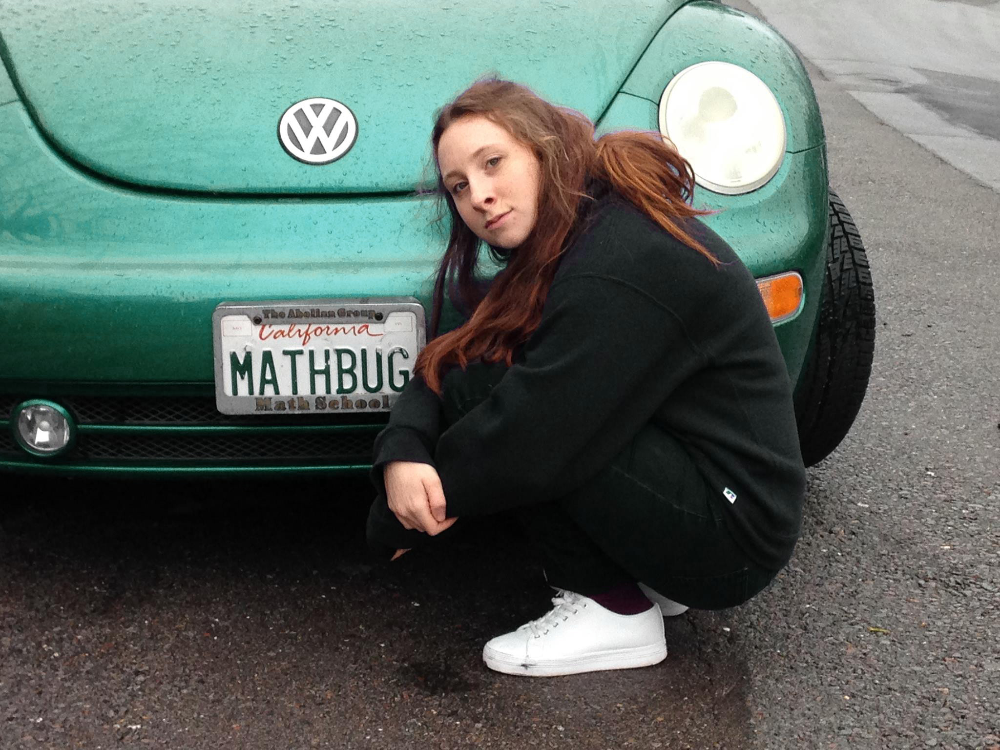

Sarah Brauner

This is me, in front of a math-bug— but it is not my math-bug! If it is yours, I would love to hear from you.
About me: I am a fourth year graduate student and PhD candidate in Mathematics at the University of Minnesota. My advisor is Vic Reiner. I did my undergrad at Reed College. After that, I spent a year at Smith College's Post-Baccalaureate Program for women in mathematics.
I am currently supported by the NSF Graduate Research Fellowship Program. Before that, I was supported by a three-year UMN College of Science and Engineering Graduate Fellowship.
Research: I study algebraic combinatorics. Specifically, I am interested in reflection groups and their connections to combinatorics, representation theory and algebraic topology. See my research page for more details.
Contact: Email me at braun622 "at" umn.edu.
Organizing:
- I am a co-organizer of the Mathematics Project at Minnesota, a weeklong workshop for UMN undergraduates that come from groups traditionally underrepresented in mathematics. The workshop runs annually every January.
- I co-organized the (virtual) Graduate Student Combinatorics Conference on April 23-25, 2021 at UMN. All talk recordings can be found here.
- Next year (2021-2022) I will co-organize the Graduate Online Combinatorics Colloquium. If you are interested in speaking, please let me know.
Recent and Upcoming Talks + Travel:
- May 12, 2021: Speaking at the Pedagogy Seminar at University of Chicago. Watch a recording of our talk here.
- May 16, 2021: Speaking at Women in Combinatorics and Representation Theory Conference. My slides can be found here.
- May 26, 2021: Speaking at IAS Program for Women in Mathematics Postdoc seminar. My slides can be found here.
- August 5-6, 2021 and February 10-11, 2022: Participating in Research Community in Algebraic Combinatorics at ICERM.
- September 17, 2021: Speaking at the UMN Combinatorics Seminar.
- January 2021: Speaking at FPSAC 2021 (postponed from July 2021 due to the pandemic).